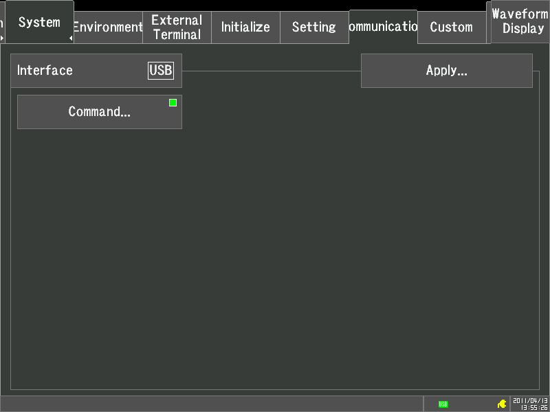

Enter a command and press the Send button to send it to the instrument.
Responses to queries are displayed in the text box.

Sample program 1
|
Microsoft Visual Basic 2010 Express Sample programs (USB) |
The following programs are provided without charge, for use entirely at your own risk.
HIOKI disclaims any and all responsibility for any consequences arising out of use of this software.
Visual Basic and Visual Studio are registered trademarks or trademarks of Microsoft Corporation in the U.S.A. and other countries.
Microsoft, Windows and MS-DOS are registered trademarks or trademarks of Microsoft Corporation in the U.S.A. and other countries.
|
Setup Procedure |
Connect the HiCORDER to the PC using the supplied USB cable.
Instrument Setting Example

|
Install USB Driver |
In order to use a USB connection, it may be necessary to install the USB driver.
If the USB driver has not been installed in the PC, a "Found New Hardware Wizard" dialog window will be displayed upon connecting the USB cable. Follow the directions and install the driver.
|
Confirming Connection |
Display the System Properties by selecting [System] in the [Control Panel], under the [START] menu on the PC.
Click the [Hardware] tab, open the [Device Manager], check that HIOKI USB Device is listed under [PORT (COM & LPT)].
(If HIOKI USB Device is not listed, reinstall the USB driver.)
|
Setup Procedure |
Refer to [USB Settings] for the USB communication properties.
Enter a command and press the Send button to send it to the instrument.
Responses to queries are displayed in the text box.
Sample program 1
This program causes the instrument to take 101 measurements on channel CH1-1, and reads the measured values.
The number of data objects stored in instrument memory is first obtained by the "MEMORY:MAXPOINT?" query.
When this query returns 0, the program is ready to receive measurement data.
Pressing the Execute button then causes the instrument to start measuring and sending the measured values.

Sample program 2
This program displays current measurement data in a text box.
Pressing the Execute button displays the data once per second.
Pressing the Stop button stops measurement.

Sample program 3
This program employs the ":STATUS" command to check instrument status.
Pressing the Execute button starts instrument status checking.
Pressing the Stop button stops status checking.

Sample program 4